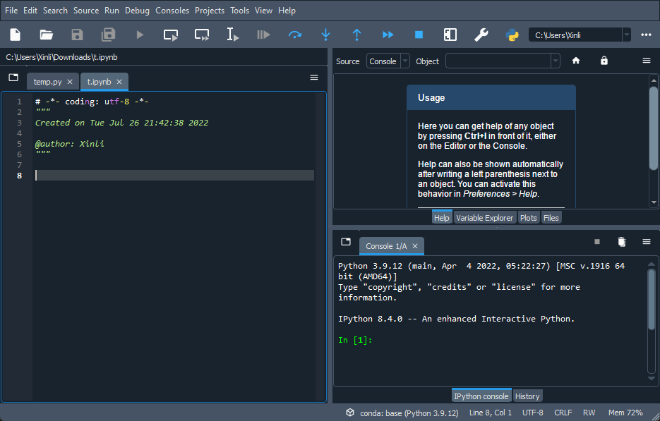

print('Hello world!')Hello world!print('Another line')
# Everything after # are comments that won't be excuted.Another lineWe will mainly focus on this code editor mode at the beginning and check our results or do some simple computations in the console.
Notebook is another very popular mode to use Python. We will talk about it later.
Please follow the following steps to run your first line of Python codes.
We will talk about the relation between Python and Anaconda and more about packages sometime later.
Go to Anaconda download page. Download and install Anaconda.
There are several IDEs for Python bundled with Anaconda. Pick any one you like. I personally use VS Code. Here we use Spyder as an example for now since it doesn’t require any configurations.
Here is a screenshot of Spyder 5.1.5. 
The right lower window is the console. Type the following code, and run. If Hello world! is displayed, the Python environment is set up successfully. Now you can start to play with Python!
The left window is called Code Editor. You can write multiple lines of codes in the code editor and run them all together. The output results might appear in the console.
As shown in the screenshot, when press F5 to run file, the codes in the code editor will be excuted line by line.
The code in the example is
print('Hello world!')Hello world!print('Another line')
# Everything after # are comments that won't be excuted.Another lineOne key feature about Python is that its structures (blocks) is determined by Indentation.
Let’s compare with other languages. Let’s take C as an example.
#/*This is a C function.*/
#int f(int x){return x;}The block is defined by {} and lines are separated by ;. space and newline are not important when C runs the code. It is recommended to write codes in a “beautiful, stylish” format for readibility, as follows. However it is not mandatary.
#/*This is a C function.*/
#int f(int x) {
# return x;
#}In Python, blocks starts from : and then are determined by indents. Therefore you won’t see a lot of {} in Python, and the “beautiful, stylish” format is mandatary.
# This is a Python function.
def f(x):
return xThe default value for indentation is 4 spaces, which can be changed by users. We will just use the default value in this course.